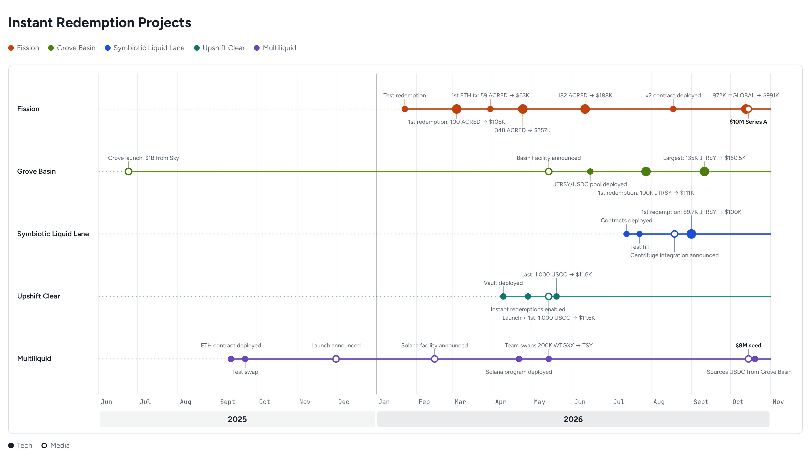

📖 Reading time: 4 min
👀 Viewing time: 4 min
Tokenizing an asset is only as credible as the market structure behind it. Minting a fund share onchain has become a formality. Putting any type of token on any chain can be a few minutes of engineering work, one prompt and a simple dev wallet funding away. Making it usable, fungible and compliant is where the challenge stands.
The instant exit of otherwise slow-liquidity tokenized funds is the problem a few startups are trying to tackle. In the last few weeks we’ve seen new fundraise announcements, including Fission’s $10M Series A led by Pantera Capital and Multiliquid’s $8M seed round led by Polychain.
The major players in the space are currently Fission, Upshift Clear, Grove Basin, Multiliquid, and Symbiotic Liquid Lane.

For most tokenized funds, the old redemption cycle still applies even after the token moves onchain. The goal is broader distribution, continuous liquidity, and tokenized fund holdings that investors can borrow against. Getting there means giving eligible holders access to capital without waiting for redemption windows, while keeping the investor eligibility rules, transfer restrictions and compliance controls that regulated funds require.
The core features are:
- Instant exits: Holders receive stablecoins, usually USDC, for a fee, without waiting for the issuer’s redemption window.
- Pooled liquidity: Vaults and liquidity providers fund those exits up front.
- Idle capital at work: Curators lend out vault capital, for example on Morpho, to earn yield until an exit needs it.
- Settlement in the background: The issuer settles the redemption later, on its own timeline, after the holder has been paid.
- EVM first, SVM next: Most activity is on EVM, mostly Ethereum mainnet, with SVM (Solana) following.
How Each Project Works
The best way to understand how redemption facilities work onchain is to see the transactions 👀. Below is a 5–7 minute video walkthrough of real EVM and SVM flows across all five projects, showing each one’s redemption process from start to finish. Each clip is a short look at one project.
Fission
Fission buys fund shares as principal from its own balance sheet. It escrows USDC for a named seller, who fills by delivering the tokens, and then Fission redeems them with the issuer. It has the largest real volume of the five projects.
Fill: 327K mGLOBAL → $333K, 0.30% fee. Etherscan ↗
Multiliquid
A swap contract prices each fund at NAV minus a discount set by each liquidity provider. Funds move straight from the provider’s wallet to the seller. It lists nine or more funds on Ethereum and Solana, though use so far is test-sized.
EVM: 2 WTGXX → $2. Etherscan ↗
SVM: 5 WTGXX → $4.99. Solscan ↗
Upshift Clear
LPs deposit USDC into a vault, which earns yield on Morpho while idle. A holder sells fund shares into the vault at the Chainlink NAV minus 5 bps, and Upshift redeems them with the issuer. USCC is the only asset so far.
Last: 1,000 USCC → $11.6K. Etherscan ↗
Grove Basin
Sky’s capital, held as USDS and converted to USDC through Sky’s PSM, buys BUIDL and JTRSY at an oracle rate with no fee. Basin redeems the shares with the fund, usually by the next day, and repays Sky.
1st redemption: 100K JTRSY → $111K. Etherscan ↗
Symbiotic Liquid Lane
Market makers quote a discount, and the winning quote is paid in USDC from a curated Symbiotic vault. A contract holds the fund tokens, requests redemption from the issuer, and repays the vault. It covers JTRSY, JAAA, HYB and Midas tokens.
1st redemption: 89.7K JTRSY → $100K. Etherscan ↗
Onchain flows remain modest for now; the five examples above total roughly $556K. But every new fund that is tokenized, and every financial product that moves onchain, adds to the demand for instant liquidity, and the trajectory points only upward 📈.